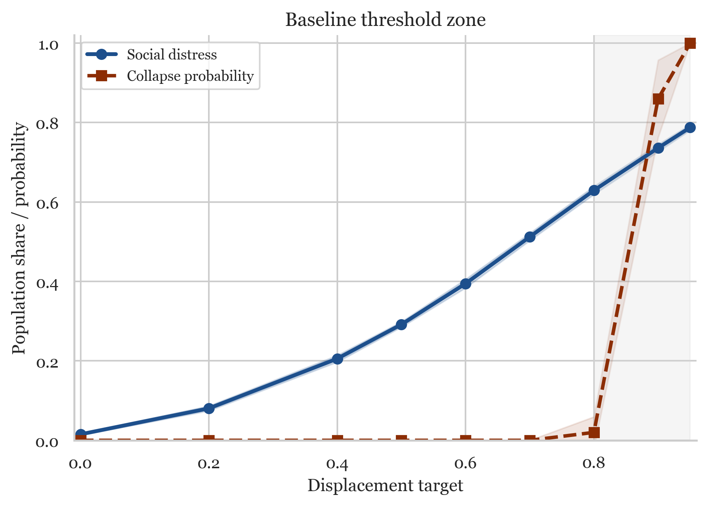
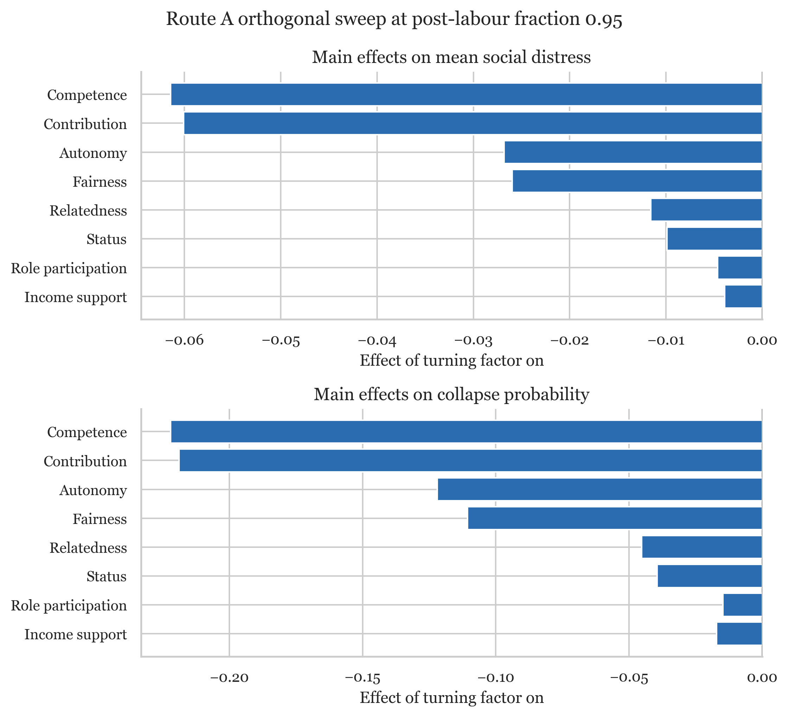
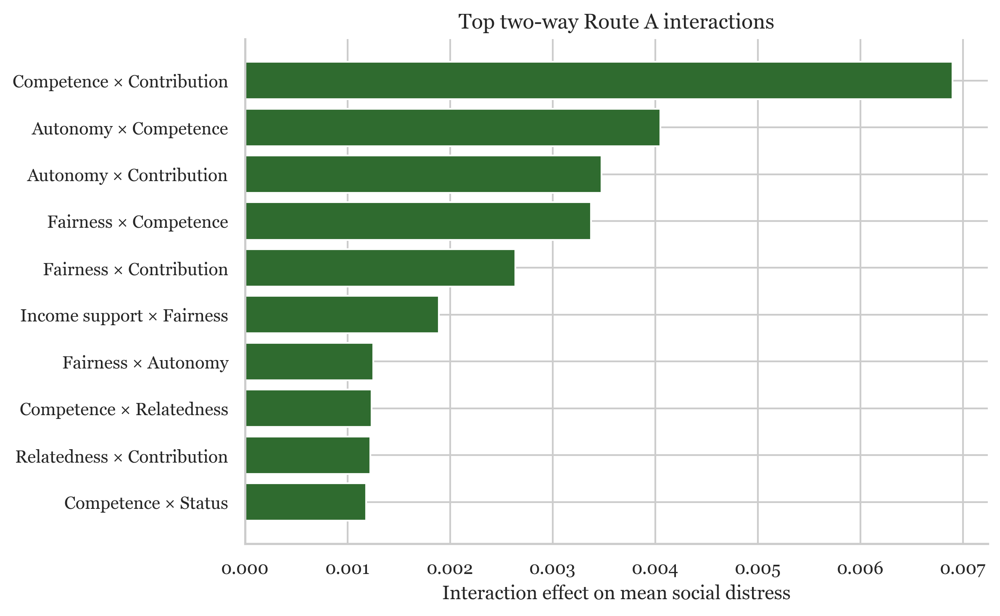
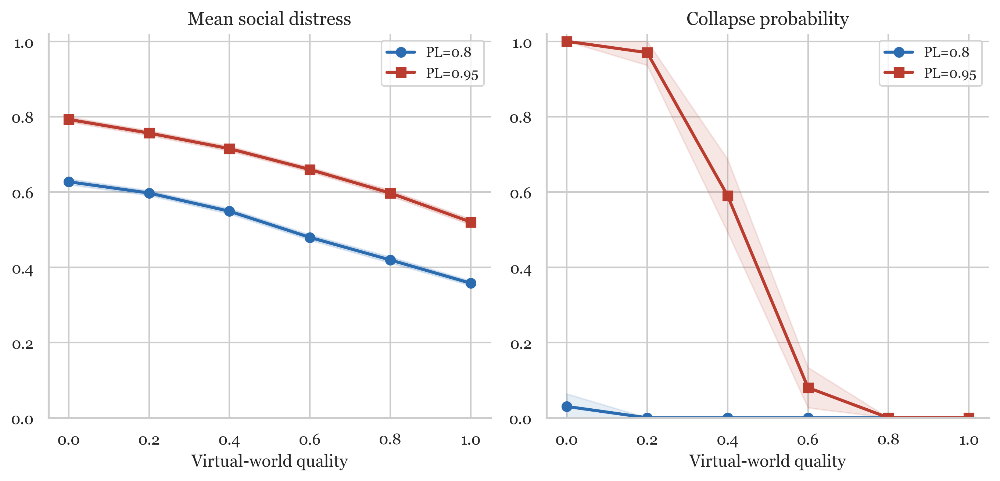
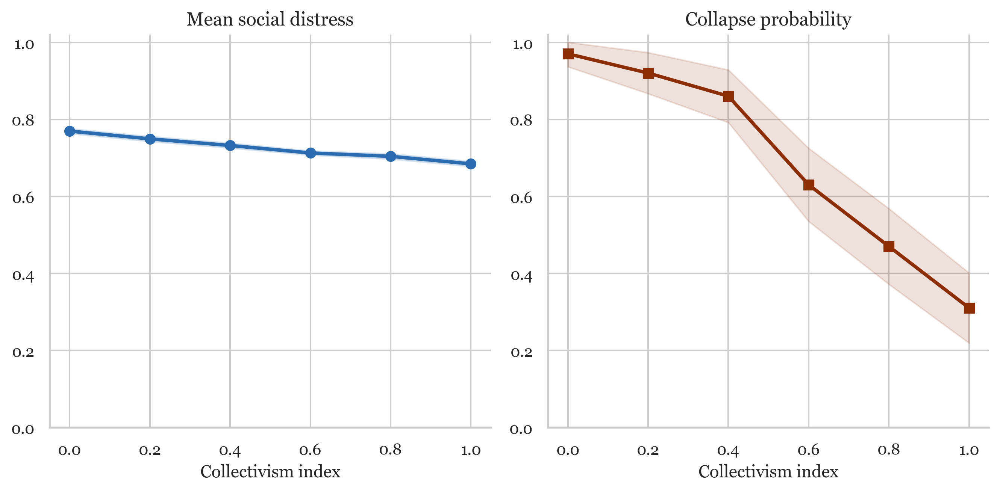
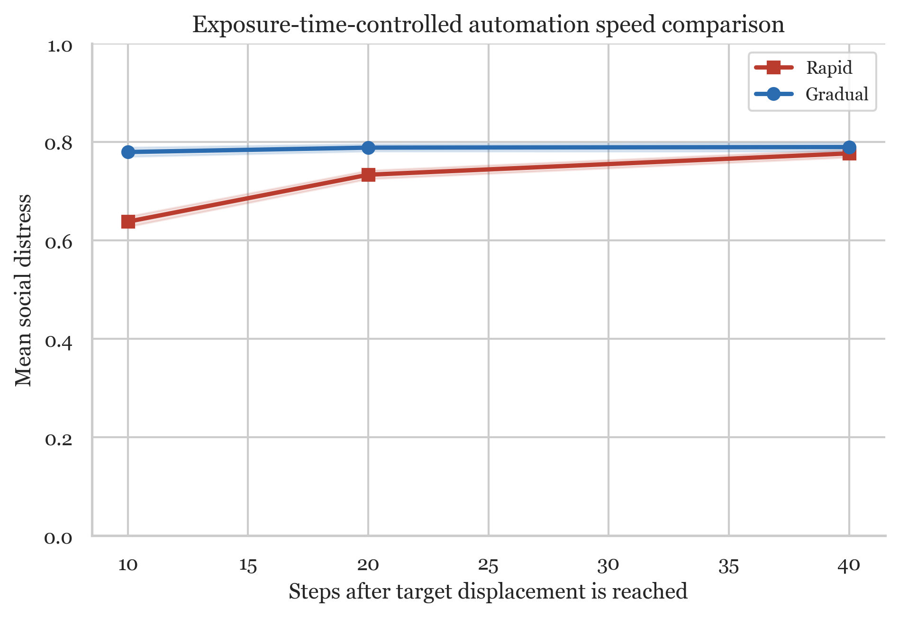
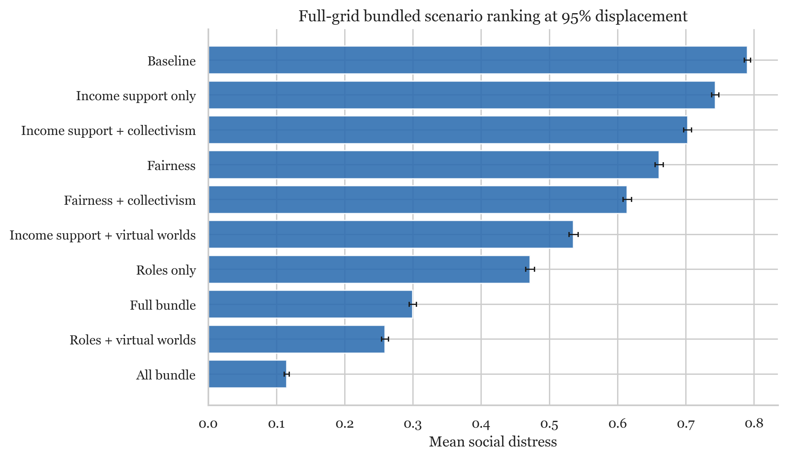
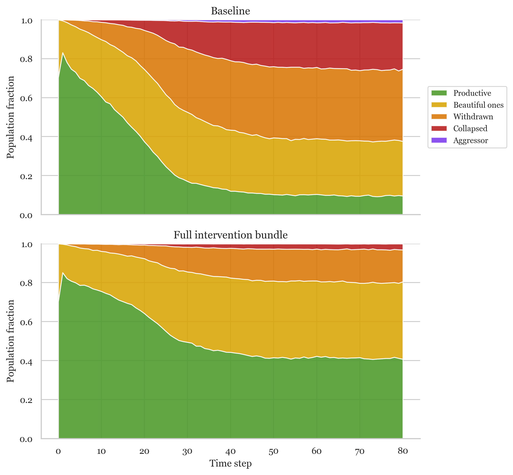

Beyond Income versus Roles: Latent-Function Channels of Resilience in a Post-Labour Agent-Based Model
Keywords: post-labour displacement, behavioural sink, self-determination theory, latent functions, agent-based modelling, orthogonal factorial design, identification
Abstract
What equilibrium states emerge when large fractions of the population lose productive roles, and which interventions prevent withdrawal-dominated behavioural sink? We present a stylised agent-based model of post-labour society grounded in Self-Determination Theory, Jahoda's latent-function account of work, and social contagion. In earlier iterations of the model we contrasted bundled "income support" and "role substitution" scenarios, but those bundles were structurally confounded, changing at least seven mechanisms at once. We therefore introduce an orthogonal eight-factor binary full factorial sweep at fixed high displacement (256 combinations, 100 runs each, 25,600 runs), independently varying income support, fairness, role participation, autonomy, competence, relatedness, status, and contribution.
Once the bundled comparison is repaired, competence restoration and contribution restoration are the dominant resilience channels, reducing mean social distress by 0.0614 and 0.0601 respectively and collapse probability by 0.2220 and 0.2189. Autonomy (−0.0268 distress; −0.1220 collapse) and fairness (−0.0260; −0.1106) are important secondary supports. Income support (−0.0039 distress; −0.0172 collapse) and role participation itself (−0.0046; −0.0148) have little independent effect at this displacement level. The strongest two-way interaction is competence with contribution, suggesting that resilience depends on complementary latent-function bundles rather than any single silver bullet. Bundled sweeps still show a policy-sensitive high-displacement threshold and partial buffering from virtual worlds, collectivism, and multi-pillar packages, but the orthogonal analysis reveals that the protection previously attributed to "roles" is primarily carried by mastery, valued contribution, and self-direction.
These results are mechanistic rather than predictive. They are conditional on a stylised parameterisation, they underrepresent aggression relative to the historical behavioural-sink literature, they do not model persistent individual scarring, and they deliberately do not capture domains — material hardship, short-run stress, bargaining power — in which income support is already known to matter. Within those limits, the model suggests that post-labour stability depends less on cash transfers or nominal participation than on institutions that preserve competence, socially valued contribution, and autonomy under mass displacement.
1. Introduction
1.1 Human wellbeing is deeply embedded in productive roles. Work provides not only income but identity, competence, social connection, and purpose (Blustein 2008; Deci and Ryan 2000). Episodes of technological displacement, deindustrialisation, and resource windfall have repeatedly shown that removing productive roles — even while maintaining material sufficiency — can produce severe social pathology (Case and Deaton 2020). The analytical problem is not whether this matters, but which components of the lost activity matter most, and therefore which institutions must be rebuilt if mass displacement persists.
1.2 Calhoun (1962) documented behavioural sink — population-level social breakdown characterised by withdrawal, aggression, and reproductive failure — in rodent populations that lacked meaningful roles despite abundant resources. Jahoda (1982) argued that employment provides not only a manifest function (income) but latent functions: time structure, social contact, collective purpose, status, and habitual activity. Loss of these latent functions, she proposed, is what explains the psychological damage of unemployment in welfare states where income is partially buffered. Because our model underrepresents aggression relative to the historical sink literature, we describe the equilibrium state throughout as a withdrawal-dominated behavioural sink.
1.3 Existing literature on artificial intelligence and employment focuses mainly on economic impacts — unemployment rates, wage effects, inequality (Autor 2015; Acemoglu and Restrepo 2018) — on technical feasibility (Felten et al. 2021), and on macro policy responses such as universal basic income, retraining, and redistribution (Standing 2017). Much of this literature frames the post-labour debate at a high level of abstraction: work versus money, roles versus transfers, production versus consumption.
1.4 That framing is analytically too coarse. As Rosso et al. (2010) synthesise, the psychological meaning of work spans multiple dimensions — purpose, belonging, self-efficacy, transcendence — which are not addressed by any single intervention. A displaced population receiving universal basic income may avoid poverty but still experience what Deci and Ryan (2000) term motivation decay: erosion of autonomy, competence, and relatedness. Conversely, a population nominally given access to substitute roles but without mastery, valued contribution, or self-direction may satisfy the letter of "role restoration" while failing to restore any of the latent functions that make participation protective. The unresolved question is therefore not whether cash transfers or role programmes are preferable in the abstract, but which latent functions of work are stabilising once those bundles are decomposed.
1.5 We integrate three theoretical strands. Self-Determination Theory (Deci and Ryan 2000) identifies autonomy, competence, and relatedness as core psychological needs. Economic roles typically satisfy all three simultaneously; displacement typically threatens all three simultaneously; but in principle each can be restored through distinct institutional channels. Jahoda's (1982) latent-deprivation framework broadens this to time structure, social contact, collective purpose, status, and activity. Social contagion theory posits that population-level distress spreads through social networks via exposure — the proportion of an agent's neighbours in distressed states increases the agent's own risk (Centola and Macy 2007; Christakis and Fowler 2007). Our model implements contagion as a linear exposure mechanism: the fraction of neighbours in distressed states exerts downward pressure on psychological state, scaled by a contagion rate, without threshold or reinforcement requirements. Following Acemoglu and Robinson (2012), we treat interventions as institutional capacities that shape how societies respond to technological shocks.
1.6 A prior version of this model compared a bundled "roles only" scenario with a bundled "income support only" scenario and concluded, on the strength of a large gap, that role substitution outperforms income at preventing behavioural sink. On closer inspection the two arms were not clean contrasts of "income" versus "roles". They differed on at least seven substantive mechanisms simultaneously — income support, fairness buffer, role participation, a direct competence bonus, and role-driven autonomy, relatedness, status and contribution effects — and so the scenario-level comparison was not suitable for isolating causal channels. Reviewers flagged this identification problem, and we treat it as the central methodological issue of the paper.
1.7 To repair the identification problem we introduce an orthogonal eight-factor binary factorial sweep (Route A). The sweep decomposes the previous bundles into independently switchable channels: income support, fairness, role participation, autonomy, competence, relatedness, status, and contribution. Each channel is varied independently at zero or one, giving 256 combinations, at fixed high displacement (post-labour fraction 0.95) and 100 Monte Carlo runs per combination. Main effects and two-way interactions of each channel are then estimable without the earlier bundling confound. We do not claim that this eight-factor decomposition exhausts the mechanisms of meaning, only that it separates the channels that were previously fused in the comparison the paper rests on.
1.8 We address four research questions. Research Question 1 asks: at what displacement levels does the population enter a high-risk behavioural-sink zone, and how policy-sensitive is that threshold? Research Question 2 asks: which latent-function channels independently reduce distress and collapse under extreme displacement? Research Question 3 asks: which channel combinations are complementary or synergistic? Research Question 4 asks: how do virtual worlds, collectivism, and broader bundled policy packages modify resilience once the key channels are identified?
2. Methods
2.1 We developed a network-based agent-based model using Mesa 3.5 (Kazil et al. 2021), following the Overview, Design concepts, and Details protocol (ODD; Grimm et al. 2020), with 200 agents interacting over 80 timesteps. The model is stylised: it characterises equilibrium states under sustained role displacement, not forecasts of specific technological timelines. The current model version (Version 5) separates income support from role participation so that the two are structurally distinct channels rather than parameter variants of the same bundle, and the Route A sweep extends this separation to autonomy, competence, relatedness, status, and contribution.
2.2 The displacement target represents the share of the population whose usual productive roles have been displaced. The population reaches that target via a gradual ramp governed by an automation rate (default 0.03 per step, reaching 80 per cent displacement by approximately step 27). At each step after the ramp, the current displacement fraction is drawn from the agent pool, representing the turnover inherent in labour markets even under high automation. This design treats displacement as a structural condition of the society rather than a permanent individual trajectory; it is appropriate for studying equilibrium properties but precludes claims about individual scarring or adjustment. The ramp-to-target mechanism means early-timestep outcomes reflect partial displacement rather than the full target level.
2.3 Agents (PostLaborAgent, N=200 per simulation) carry a profile (resilient, balanced, vulnerable), latent traits (resilience, social capital, skill transferability), psychological states (autonomy, competence, relatedness, status on zero–one scales), a derived meaning score, role-channel fields (role participation, income support, virtual role engagement, and in the Route A extension independent autonomy, competence, relatedness, status, and contribution support fields), displacement status, behavioural archetype, and birth intention. Profile distribution is 15 per cent resilient, 55 per cent balanced, 30 per cent vulnerable. Trait values are drawn from profile-specific means with Gaussian noise. Model-level parameters include post-labour fraction (0–0.95), automation speed (0.006–0.20 for speed comparison; 0.03 baseline for other sweeps), virtual world quality (0–1), collectivism index (0–1), and intervention intensities for each of the eight channels.
2.4 Following Grimm et al. (2020), the model's purpose is to investigate population-level equilibrium states when large fractions of society lack productive economic roles, characterising how displacement level, intervention regime, cultural context, and virtual role quality interact to determine whether a population reaches behavioural sink or maintains functional states. The model is designed to reproduce five macroscopic patterns: a sink threshold at 80–90 per cent displacement under baseline conditions; residual distress under income support alone consistent with Jahoda's (1982) latent-deprivation hypothesis; cohesion moderation in collectivist cultural settings; separability of income-channel and meaning-channel effects; and ramp-speed insensitivity at equilibrium.
2.5 The environment is a Watts-Strogatz small-world graph (k=6, rewiring probability p=0.1) that remains static throughout simulation. Temporal scale is 80 discrete timesteps, each representing an unspecified period. Spatial scale is network topology only. Replication uses 50–150 Monte Carlo runs per parameter point for bundled sweeps and 100 runs per combination for the Route A sweep. Each timestep proceeds in three phases. Model-level processes advance automation and assign channel supports to displaced and non-displaced agents. Agent-level processes in random activation order compute neighbourhood archetype fractions, update psychological states via mean-reverting dynamics, search for virtual roles, compute meaning, classify into behavioural archetypes, and update birth intention. Data collection at step end records all model-level reporters.
2.6 Each timestep, agents update psychological states via mean-reverting dynamics toward targets that depend on their circumstances. Each psychological variable moves a fraction of the distance toward its target perturbed by stochastic noise. Noise standard deviation is 0.08 per step, with an additional agent-level shock of 0.03, producing equilibration within approximately thirty steps while maintaining realistic between-run variance. Targets depend on channel supports, virtual role quality (if displaced), fairness, collectivism, contagion exposure, and individual resilience.
2.7 The meaning score aggregates five weighted components: autonomy, competence, and relatedness (each weighted 0.25, following the equal-weight assumption in Self-Determination Theory), status (0.10), and contribution (0.15). The contribution component combines role participation and virtual engagement; virtual engagement contributes only when it exceeds a minimum threshold of 0.10. A direct social contagion term subtracts the fraction of neighbours in distressed states, scaled by the contagion rate, and an individual resilience term provides a small positive buffer. Crucially, income support does not enter the meaning function directly; it acts only through fairness and the status gap.
2.8 Agents are classified into five behavioural archetypes based on meaning and aggression potential. Productive agents have meaning above 0.55. Beautiful ones have meaning above 0.42 with low aggression potential. Aggressors have meaning below 0.40 and aggression potential above 0.30. Withdrawn agents have meaning above 0.30 with low aggression potential. Collapsed agents have meaning at or below 0.30. These cutoffs are calibration choices; a sensitivity analysis shifting all thresholds by ±0.05 shows that directional results are unchanged. Because aggressor prevalence remains low in the reported high-displacement outputs — 1.6 per cent at step 80 in the baseline 80 per cent displacement time series, and 3.3 per cent in the baseline 95 per cent full-grid condition, versus 10–20 per cent in the historical behavioural-sink literature — the model characterises a withdrawal-dominated sink and should not be used to draw conclusions about high-aggression scenarios.
2.1 Bundled sweeps (contextual evidence)
2.9 We conducted six bundled parameter sweeps plus two ablation studies, totalling 18,500 runs. Sweep 1 varied post-labour fraction across 9 levels with 5 scenarios and 50 runs per point (2,250 runs). Sweep 2 examined automation speed with 2 speeds across 5 scenarios and 100 runs per point (3,000 runs). Sweep 3 varied virtual world quality across 6 levels with 3 scenarios by 2 conditions and 100 runs per point (3,600 runs). Sweep 4 varied collectivism index across 6 levels with 3 scenarios by 2 conditions and 100 runs per point (3,600 runs). Sweep 5 tracked archetype time series with 2 displacement levels, 2 scenarios, and 50 runs per point (100 runs). Sweep 6 was a full bundled scenario grid with 10 scenarios and 150 runs per point (4,500 runs). Ablation A tested weight ratios across 5 levels with 4 scenarios and 50 runs per point (1,000 runs). Ablation B examined intervention decoupling with 1 condition, 3 scenarios, and 150 runs per point (450 runs). Section 3.7 draws on a separate exposure-time-controlled speed comparison comprising 300 additional simulations, reported separately and not included in the 18,500-run primary total.
2.10 These bundled sweeps continue to serve as contextual evidence: they describe how stylised policy portfolios perform along displacement, virtual quality, cultural, and speed gradients. Following the identification repair in Section 2.2, however, they should no longer carry the paper's principal causal claim about which channel makes the difference. Their role in the paper is bundle-level policy illustration; the mechanism argument rests on the Route A decomposition.
2.2 Identification repair: the Route A orthogonal sweep
2.11 The principal methodological contribution of this version of the paper is an explicit identification repair. In the prior bundled comparison, the "income support only" arm did not vary only income support: it also raised fairness (through a hard-coded coupling that tied fairness linearly to income) and reduced the status gap, while the "roles only" arm changed seven downstream mechanisms at once — role participation, a direct competence bonus, and the autonomy, relatedness, status, and contribution channels that all flowed through a single role-access carrier. The scenario-level contrast therefore bundled at least seven substantive mechanisms into a single two-condition comparison. We treat this as a confounded identification design rather than a minor parameter issue.
2.12 To repair the confound we decoupled the model architecture so that each channel can be independently switched. We broke the hard-coded fairness-to-income coupling by introducing a fairness-from-income coefficient, set to zero for the Route A sweep. We converted the direct competence bonus previously tied to role programmes into an independent competence channel. We introduced independent autonomy, relatedness, status, and contribution support fields on each agent, and replaced the role-access term in the target equations for those channels with the corresponding support field. We left role access itself in place only where it represents genuine participation — the birth-intention penalty and the status exclusion penalty — so that role participation remains a distinct factor rather than disappearing from the model. The decoupling is therefore a structural edit of the model, not a reparameterisation of the existing one.
2.13 The Route A sweep is a full binary factorial over eight channels: income support, fairness, role participation, autonomy, competence, relatedness, status, and contribution. Each factor is set to zero or one. The sweep holds the rest of the model fixed at the paper's baseline values — 200 agents, post-labour fraction 0.95, automation rate 0.03, virtual world quality 0.0, collectivism index 0.3, contagion strength 0.5, 80 timesteps — so that all variation between cells comes from the eight channels. This yields 2^8 = 256 independent combinations. Each combination is run for 100 Monte Carlo replicates, for a total of 25,600 simulation runs. A planned secondary robustness rerun at post-labour fraction 0.80 is treated as future work.
2.14 The estimands are main effects and two-way interactions of each channel on three outcomes: mean social distress at step 80 (share in aggressor, withdrawn, or collapsed states, averaged over runs), collapse probability (share of runs with final social distress above 0.70), and population mean meaning. Main effects are computed as the difference between the cell-level mean at factor level one and the cell-level mean at factor level zero, averaged over all combinations of the other seven factors. Two-way interactions are computed analogously as deviations from main-effect additivity. This design measures partial effects under the assumption that the eight channels are separable in the model's architecture — an assumption we make true by construction through the structural decoupling in Section 2.12.
2.15 We emphasise that Route A is a review-driven identification repair rather than a new claim added on top of the original analysis. The bundled comparison was not suitable for isolating causal channels, and we do not attempt to defend it. The Route A design answers the question the bundled comparison was originally supposed to answer — which channels are doing the work — and answers it on the model's own terms.
2.3 Sensitivity and horizon
2.16 We verified that outcomes are near-stationary by step 80: across the nine tested scenario-by-displacement conditions, the absolute change in mean social distress between step 80 and step 120 ranges from 0.0009 to 0.0092, and the maximum absolute change between step 80 and step 240 is 0.0060. We therefore use step 80 as a reliable near-equilibrium approximation. The largest intermediate change between steps 120 and 160 equals 0.0144 under the baseline 80 per cent displacement condition, reflecting continued slow adjustment in that specific scenario.
2.17 We conducted one-at-a-time perturbation of three key internal parameters (noise standard deviation, decay rate, social contagion rate) by ±20 per cent, with 50 runs per condition at 80 per cent and 95 per cent displacement under baseline conditions. Core findings are directionally consistent across tested ranges: at 80 per cent displacement, collapse probability ranges from 2 to 12 per cent; at 95 per cent displacement it ranges from 92 to 100 per cent. The largest shift at 80 per cent displacement occurs under social-contagion-rate perturbation, where mean social distress ranges from 0.605 at minus 20 per cent to 0.657 at plus 20 per cent.
2.18 Primary outcomes include population mean meaning, social distress, collapsed-agent share, and collapse probability. Secondary outcomes include archetype distributions over time, birth intention, and social trust (mean relatedness). Given the effect sizes and the deterministic tendency of mean-reverting dynamics, conventional inferential statistics (p-values, power) are not meaningful here; we report point estimates and standard errors of the mean as descriptive summaries only.
3. Results
3.1 Threshold zone under baseline conditions
3.1 The bundled sweeps confirm a policy-sensitive high-displacement threshold between 80 and 95 per cent under baseline conditions, where population distress rises sharply as economic support alone proves insufficient. Under baseline conditions at 80 per cent displacement target, population mean meaning is 0.382, social distress is 0.629, and collapse probability is 2 per cent. At 90 per cent displacement these become 0.348, 0.736, and 86 per cent respectively. At 95 per cent displacement they reach 0.330, 0.788, and 100 per cent. The threshold is not a fixed cliff; it is a high-risk zone in which small institutional differences can shift the long-run social state.
3.2 The threshold moves substantially when the policy mix changes. With the full intervention bundle, collapse probability remains 0 per cent through 95 per cent displacement (social distress 0.301). With income support alone, collapse probability is 32 per cent at 90 per cent displacement and 92 per cent at 95 per cent displacement. Run-level collapse and collapsed-agent share are not the same metric: at 95 per cent displacement in the full-grid condition, the income support alone scenario shows social distress 0.743, collapsed-agent share 0.325, and collapse probability 87.3 per cent. A society can have high run-level collapse risk even when the fully collapsed subgroup is smaller, because the broader distress measure also counts withdrawal and aggression.
3.3 These threshold results establish the setting in which the mechanism question becomes sharp: at 95 per cent displacement the baseline economy is essentially certain to collapse, and the remaining question is which channels repair it. The Route A sweep in Sections 3.2–3.4 answers that question directly; the bundled sweeps in Sections 3.5–3.9 characterise how stylised policy portfolios behave once those channels are identified.

3.2 Route A main effects: which channels matter?
3.4 The orthogonal sweep at post-labour fraction 0.95 decomposes the bundled comparison into independent channel contributions. Table 1 reports the main effect of each channel on mean social distress, collapse probability, and population mean meaning. The ranking is consistent across all three outcomes: competence and contribution dominate, autonomy and fairness are clearly important secondary supports, relatedness and status are weak, and income support and role participation on their own are essentially inert at this displacement level.
3.5 On mean social distress, competence reduces population distress by 0.0614 (from 0.2270 when competence is off to 0.1656 when it is on, averaging over all combinations of the other seven factors), and contribution reduces it by 0.0601 (from 0.2263 to 0.1662). Autonomy reduces distress by 0.0268 and fairness by 0.0260. Relatedness and status produce smaller but non-zero reductions of 0.0116 and 0.0099 respectively. Role participation in isolation reduces distress by only 0.0046 and income support by only 0.0039 — an order of magnitude below the competence and contribution channels.
3.6 On collapse probability the separation is starker. Competence reduces the probability that a run ends in collapse by 0.2220, taking it from 0.2230 when off to just 0.0009 when on; contribution reduces it by 0.2189. Autonomy and fairness reduce collapse probability by 0.1220 and 0.1106 respectively, relatedness by 0.0453, and status by 0.0395. Role participation and income support reduce collapse probability by only 0.0148 and 0.0172 respectively. The comparison is not close: the channels that move the sink-probability ranking are not the ones the previous bundled comparison named.
3.7 On population mean meaning, the same ordering holds but compressed. Competence shifts mean meaning by 0.0515 and contribution by 0.0500; autonomy and fairness shift it by 0.0228 and 0.0221; relatedness and status by 0.0098 and 0.0085; role participation and income by 0.0040 and 0.0035. Because meaning in this model is bounded below by contagion and above by the resilience term, the absolute magnitudes are small, but the ordering is preserved.
3.8 The top- and bottom-ranked combinations make the same point at the cell level. All ten of the lowest-distress combinations include fairness, autonomy, competence and contribution; none of the ten highest-distress combinations includes any of those four. Income and role participation appear in about half of the best cells and about half of the worst cells, which is exactly what "secondary or weak lever" looks like in this design. The single worst combination ("none", all channels off) produces social distress 0.3036 with 100 per cent collapse, essentially indistinguishable from the isolated "income" cell (0.2972, 100 per cent) or the isolated "role participation" cell (0.3000, 99 per cent). The single best combination ("all eight on") produces social distress 0.1048 with 0 per cent collapse. Turning income support on while leaving the four core channels off is not a materially different condition from doing nothing.
3.9 Read together, these main effects license a specific substantive conclusion and rule out a more aggressive one. They support the claim that at extreme displacement in this model, resilience against withdrawal-dominated sink is primarily carried by mastery, socially valued contribution, and self-direction, with fairness and a partial social-relatedness channel as secondary supports. They do not support the stronger claim that nominal role participation or income support alone are sufficient, and they are not consistent with the older framing under which "roles beat income" was interpreted as a clean mechanism finding. Once the bundle is opened, roles and income are similarly weak as standalone levers; the difference in the earlier bundled comparison was being done by other channels that happened to travel with the roles arm.

3.3 Route A interactions: complementary bundles
3.10 Two-way interactions in the orthogonal sweep show that the competence and contribution channels are complementary rather than substitutable. The strongest interaction on social distress is competence with contribution (0.0069), followed by autonomy with competence (0.0040) and autonomy with contribution (0.0035). Fairness pairs next — fairness with competence (0.0034) and fairness with contribution (0.0026) — and the remaining pairings are an order of magnitude smaller. On collapse probability the competence-with-contribution interaction is 0.4341, which reflects the fact that the marginal competence effect is much larger when contribution is also on, since many of the runs in which only one of the two is on still end in collapse.
3.11 The interaction structure matters for how the results should be read. An additive reading of the main effects would suggest that each channel contributes independently, so that stacking any two competence-tier channels gives roughly twice the benefit. The interaction estimates show that this is not what happens: the joint activation of competence and contribution does more than the sum of their main effects, and the same is true more weakly for autonomy with competence and autonomy with contribution. The model therefore implies that effective post-labour support comes from complementary latent-function bundles — mastery plus valued contribution, with self-direction as a cross-cutting support — rather than from any single channel pushed hard.
3.12 The interaction structure also does not rescue the original bundled framing. Income support and role participation do not gain large effects through any of the high-ranking interactions. There is no pair of conditions in which switching income on materially changes the main-effect ranking of competence or contribution, and no pair in which switching role participation on materially changes it either. What Route A rules out is not the presence of interactions — there are interactions — but the claim that "income versus roles" is the right axis on which to read them.

3.4 Reconstructing the bundled sweeps through Route A
3.13 With the channel ranking identified, the bundled sweeps admit a cleaner reinterpretation. The old "income support only" arm carried one strong channel (income, essentially inert in Route A) and a residual fairness nudge through the old coupling. The old "roles only" arm carried role participation (inert), the direct competence bonus (strong), the role-access-driven autonomy term (moderate), the role-access-driven relatedness and status terms (small), and the role-access-driven contribution term (strong). Under this decomposition it is not surprising that "roles only" outperformed "income support only" in the bundled sweeps: the roles arm included two of the four strong channels (competence and contribution), whereas the income arm included none. The gap in the old bundled comparison was doing something real, but it was not "roles beat income" — it was "competence and contribution beat the absence of competence and contribution, by a lot".
3.14 This reinterpretation does not invalidate the bundled sweep results as descriptions of bundle-level policy performance; it repositions them. They remain useful for characterising how stylised packages behave along displacement, virtual quality, cultural and speed gradients, and they should be read that way in Sections 3.5–3.9. The mechanism claim, however, comes from Route A, not from the bundle rankings.
3.5 Bundled sweep: virtual worlds as partial substitutes
3.15 Virtual worlds reduce distress in the bundled sweeps but act as partial substitutes rather than full replacements for real social roles. Under baseline conditions at 95 per cent displacement, raising virtual quality from 0.0 to 1.0 reduces social distress from 0.793 to 0.520, with collapse probability reaching 0 per cent by quality 0.8. With income support alone at 95 per cent displacement, virtual quality of 0.6 reduces collapse probability from 90 to 0 per cent, with social distress falling from 0.746 to 0.598.
3.16 The full-grid sweep shows the same ordering at 95 per cent displacement: income plus virtual worlds averages social distress 0.535 with 0 per cent collapse, while the bundled "roles plus virtual" scenario reaches 0.259 with 0 per cent collapse. Read through Route A, this pattern is consistent with virtual worlds providing partial competence and contribution routes that operate in parallel to the activated channels of the surrounding bundle. Virtual infrastructure is strongest as a supplement to institutions that already restore mastery and valued contribution, not as a substitute for them.
3.17 The weight ablation analysis shows that the ceiling of virtual worlds is assumption-sensitive, but the ranking is stable. At an economic-to-virtual contribution ratio of 3:1, the bundled "virtual only" arm yields social distress 0.446, while "income support only" yields 0.749. At the default 8:1 ratio, virtual only yields 0.517. At infinite ratio (virtual contributing nothing), virtual only yields 0.584 and "income support plus virtual" yields 0.520. The exact ceiling depends on how much meaning virtual roles are assumed to carry, but the intervention ordering does not flip.

3.6 Bundled sweep: collectivism as social buffer
3.18 Collectivism reduces distress but does not independently eliminate collapse at extreme displacement. At 95 per cent displacement with no interventions, collectivism 0.0 yields 100 per cent collapse and social distress 0.812, while collectivism 1.0 yields 92 per cent and 0.743. With income support alone at 95 per cent displacement, collectivism 0.0 yields 97 per cent collapse and social distress 0.769, while collectivism 1.0 yields 31 per cent collapse and 0.684. The collectivism sweep reveals a continuous dose-response relationship — higher collectivism is associated with lower distress and collapse probability under both conditions — rather than a threshold switch. Read through Route A, this is consistent with collectivism providing a partial relatedness channel plus a small fairness-adjacent effect, which in the main-effects table are secondary rather than dominant.
3.19 At 80 per cent displacement with income support alone, collectivism 0.0 yields 0 per cent collapse and social distress 0.600, while collectivism 1.0 yields 0 per cent collapse and 0.511. Collectivism therefore contains moderate stress well but does not rescue a society already deep in the extreme-displacement regime. Cultural context moderates post-labour distress without eliminating the underlying need for competence- and contribution-supporting institutions.

3.7 Bundled sweep: automation speed
3.20 Once outcomes are compared at the same time after the target displacement is reached, automation speed matters much more for the transition than for the later equilibrium. In the controlled speed comparison at 95 per cent target displacement, rapid automation (rate 0.20) reaches the target in 5 steps and gradual automation (rate 0.0059) reaches it in 160 steps. At 10 steps after target, rapid shows social distress 0.638 versus 0.780 for gradual; at 40 steps after target, 0.777 versus 0.790 — a difference of only 0.013. The same directional pattern appears under income support alone (0.594 versus 0.732 at 10 steps, converging to 0.727 versus 0.739 at 40 steps) and under the full bundle (0.241 versus 0.274 at 10 steps, converging to 0.302 versus 0.291 at 40 steps). Transition velocity affects transition duration but not late-run aggregate outcomes within this equilibrium-seeking model.
3.21 Because the model does not represent persistent individual displacement, scarring, or retraining trajectories, we do not draw operational guidance about transition-speed management from this result. A persistent-displacement model is needed before strong conclusions about managed transition speed or intervention timing can be supported.


3.8 Archetype trajectories
3.22 The time-series sweep shows a recognisable progression: agents do not jump directly from functioning to collapse but move through increasingly detached states over time. Under baseline conditions at 80 per cent displacement, the productive share declines from 70.5 per cent at step 0 to 60.5 per cent by step 10 and then to 9.6 per cent by step 80. Withdrawn agents grow from 8.9 per cent by step 10 to 37.1 per cent by step 80. Collapsed agents grow from 1.3 per cent by step 10 to 23.7 per cent by step 80. Aggressors remain rare at 1.6 per cent by step 80. Social distress reaches 0.624 by step 80. Because archetypes are classified before initial data collection in Version 5, the time series begins with 70.5 per cent productive and 29.5 per cent beautiful ones rather than an artificial 100 per cent productive population.
3.23 Under the full bundle at 80 per cent displacement, by step 80 the distribution is 40.7 per cent productive, 39.8 per cent beautiful ones, 16.4 per cent withdrawn, 3.1 per cent collapsed, and 0.1 per cent aggressors, with social distress 0.195. The dominant pathway is productive to beautiful one to withdrawn to collapsed, with aggression remaining rare throughout. The beautiful-one phase is already present in the seeded initial condition and remains the most common transitional state before collapse deepens. The model's warning signs therefore appear before full breakdown, which means earlier intervention should in principle be possible if policies target the competence and contribution channels that Section 3.2 identifies.

3.9 Historical analogues as illustration
3.24 The Nauru-versus-Gulf comparison is illustrative rather than confirmatory. It asks whether the model's mechanisms resemble two real-world cases with different social outcomes under material abundance, not whether the model has been validated against them. The Nauru analogue (95 per cent displacement, baseline) shows population mean meaning 0.330, social distress 0.790, and 100 per cent collapse probability. The Gulf states analogue (80 per cent displacement, income support plus collectivism) shows population mean meaning 0.416, social distress 0.526, and 0 per cent collapse probability.
3.25 The Republic of Nauru experienced rapid resource-driven wealth from phosphate mining (1960s–1990s), providing citizens with income that eliminated the need for employment. The period was associated with severe social dysfunction: 94 per cent obesity, 31 per cent diabetes, alcohol abuse, and family breakdown. Gulf states (UAE, Qatar, Kuwait) achieved comparable post-scarcity material conditions through oil wealth with substantially better aggregate outcomes. One notable difference is the role of collectivist and religious institutions that preserved socially recognised participation and status pathways, though multiple confounds preclude causal attribution. Read through Route A, the more favourable Gulf outcomes are consistent with partial preservation of competence, contribution, and autonomy channels that simple income transfers do not activate.
4. Discussion
4.1 Theoretical implications
4.1 Within the Self-Determination Theory framework, our orthogonal analysis implies that the three core psychological needs are not equally stabilising in a post-labour equilibrium. Competence (mastery) and a SDT-adjacent contribution channel (valued contribution to others) dominate, autonomy (self-direction) is a clear secondary support, and relatedness alone — decoupled from competence and contribution — is comparatively weak. This refines rather than contradicts SDT: it suggests that in a society where productive roles have been removed, the binding constraint on meaning is not the absence of social connection per se but the absence of institutions that allow people to be effective at something that visibly matters to others.
4.2 The theoretical pivot is from a "work versus money" framing to a "latent functions of work" framing. Under the older reading, the question was whether cash transfers or role programmes were more protective at aggregate. Under the latent-functions reading, the question is which of Jahoda's (1982) five latent functions — time structure, social contact, collective purpose, status, and habitual activity — the society has managed to preserve through whatever institutional means it has available. The Route A decomposition is consistent with Jahoda's hypothesis that income (the manifest function) is not sufficient, and it sharpens the claim by identifying mastery, contribution and self-direction as the specific dimensions whose loss predicts withdrawal-dominated sink in the model.
4.3 The 80–90 per cent displacement zone continues to exhibit steep threshold behaviour in the bundled sweeps: small parameter changes near this region produce disproportionately large outcome changes, consistent with nonlinear dynamics in complex adaptive systems. We use "threshold effect" empirically, not in the formal sense of a mathematical phase transition. Crucially, this threshold is policy-sensitive rather than fixed, and Route A now specifies what kind of policy moves it: institutional configurations that restore competence, contribution, and autonomy move the threshold substantially; configurations that do not restore these channels barely move it at all, no matter how much income they transfer.
4.2 Policy implications
4.4 The policy implication of the orthogonal decomposition is that viable post-labour institutions must not only distribute resources but also create structures for skill use, efficacy, recognition, and socially valued contribution. Under extreme displacement in this model, competence and contribution are the principal resilience levers, autonomy and fairness are important secondary supports, and income is mechanistically weak as a sink-prevention lever at equilibrium. Policy portfolios that rely on cash transfers without rebuilding mastery and valued-contribution infrastructure are unlikely to prevent withdrawal-dominated sink at the displacement levels the model considers extreme.
4.5 We emphasise that this is not a claim that income support is useless. It is a claim that under extreme displacement and conditional material sufficiency, income support alone is a weak lever for preventing behavioural sink in this model's psychosocial-collapse dynamics. That finding does not translate into a claim that income support is normatively unimportant or unnecessary, and it deliberately does not speak to domains the model does not represent well. The model does not capture poverty and consumption shocks, bargaining power and labour-market transitions, short-run stress reduction, or health-access and material-hardship pathways, and income support is known from other literatures to matter substantially in those domains. What the model says is narrower: within its equilibrium representation of a displaced population whose material needs are already met, cash transfers function as a floor rather than the core resilience engine.
4.6 Nominal role participation, similarly, does not substitute for the underlying latent functions. A direct reading of Route A is that symbolic inclusion or occupied time is not enough: what matters is whether the activity restores efficacy, contribution and self-direction. Programmes that preserve the label of "role" without preserving competence-building or valued-contribution structures would not be expected to move the equilibrium. This is a stronger social-science claim than the prior bundled finding would have supported, because it identifies the specific mechanism requirements rather than the packaging.
4.7 Virtual worlds and collectivism act as partial complementary supports in the bundled sweeps. Read through Route A, their benefit comes from the fact that they provide weak but non-zero competence, contribution, and relatedness channels, which stack with whatever other interventions the surrounding bundle activates. They are most useful when paired with institutions that also restore the dominant channels directly; they are least useful when used as substitutes for such institutions. Cultural infrastructure and digital infrastructure help, but neither rescues a society already deep in the extreme-displacement regime on its own.
4.8 The archetype trajectory — productive to beautiful one to withdrawn to collapsed, with aggressors at 1.6 per cent by step 80 in the baseline time series — provides a potential early-warning framework. Rising beautiful-one and withdrawn fractions precede collapse in the model, which means that in principle monitoring these intermediate states could flag approaching equilibria before social-distress measures cross thresholds. We stress "in principle" because the archetype classification depends on internal meaning scores that are not directly observable outside the model.
4.3 Empirical plausibility
4.9 We assess whether the model's core mechanism — that mastery, valued contribution, and self-direction are more protective than cash transfers alone at extreme displacement — finds support in empirical evidence. This is a pattern-matching exercise rather than prospective validation. We did not derive quantitative predictions from the Route A decomposition and then test them against independent data; we assess whether the model's mechanisms align with documented cases of role displacement and social distress. The goal is not to claim predictive power but to evaluate whether the orthogonal channel ordering is consistent with observed social dynamics.
4.10 The Finnish basic income experiment (2017–2018) is the most direct test of income in isolation (Kangas et al. 2021). Two thousand unemployed adults received €560 monthly with no conditions, compared to a control group receiving standard unemployment benefits (Kela 2020). Recipients reported better perceived economic security and less mental strain than controls, with higher life satisfaction, but virtually no employment effects: recipients worked only six days more over two years (78 versus 72). Critically for Route A, the experiment did not systematically measure restoration of competence, valued contribution, or self-direction. Wellbeing improvements were modest and concentrated in financial security and reduced bureaucratic stress, not in mastery or meaning restoration. Qualitative interviews revealed heterogeneous effects: some recipients found new opportunities for voluntary work or informal care (effectively partial contribution and competence channels), while others experienced pressure and difficulty coping despite income security (Hiilamo 2022).
4.11 This pattern aligns with the Route A ordering. Income support alone improves financial-stress markers but does not activate the dominant channels in the model's main-effects table; the Finnish experiment behaved as manifest-function (income) replacement only, producing modest wellbeing gains without addressing competence or contribution deprivation. Route A predicts exactly this shape: small positive effects from income in isolation, larger effects when institutions also restore mastery and valued contribution.
4.12 Jahoda's (1982) latent-deprivation framework is the foundational theory for this decomposition, and recent meta-analytic work quantifies its predictions. Paul and Moser (2009) found the psychological harm of unemployment to be d = 0.51 across 318 studies, persisting across countries with varying social safety nets and indicating that income replacement alone is insufficient to buffer psychological distress. Allan, McKee, and Russell (2023), the first published study to test Jahoda's model directly, analysed 65 samples and found that employed people reported significantly higher levels on all five latent functions than unemployed people; when controlled for each other, all five latent functions were significant independent predictors of mental health (R² = 0.19). The most striking finding for our decomposition is that retirees — people out of the labour force with income security — showed intermediate deprivation levels on the latent functions, almost as deprived as the unemployed despite not being deprived of the manifest income function. This directly parallels our Route A result that income support without competence, contribution, and autonomy channels leaves meaning deprivation unaddressed.
4.13 Mortality evidence further supports the latent-function reading. Roelfs, Shor, Davidson and Schwartz (2011) found unemployment associated with a 63 per cent higher risk of all-cause mortality even after controlling for income and financial factors. The mortality effect persists in countries with strong welfare states where income loss is buffered, implicating non-economic mechanisms of exactly the kind Route A isolates.
4.14 The deaths-of-despair phenomenon documented by Case and Deaton (2015, 2017, 2020) provides a stronger empirical analogue to withdrawal-dominated sink. Since 1998, midlife mortality has risen for white non-Hispanic Americans without college degrees, driven by drug overdose, alcohol-related liver disease, and suicide. In their own words, "It is the loss of meaning, of dignity, of pride, and of self-respect that comes with the loss of marriage and of community that brings on despair, not just or even primarily the loss of money." Middle-aged whites without high school diplomas are more than three times as likely to die of despair as college graduates, and the increases track the decline of meaningful work in deindustrialised communities — factory and mining closures — not just income loss. Despite substantial federal welfare support (SSI, SNAP, Medicaid), Central Appalachia has significantly higher rates of deaths of despair than other poor US regions with similar income levels, with opioid mortality rates 2–3 times the national average (Appalachian Regional Commission 2017). Meyer et al. (2023) found a direct link between Appalachian coal mine closures and the opioid epidemic, with the loss of mining identity and community structure as the key mechanism — consistent with loss of competence and valued contribution rather than income alone. Autor, Dorn and Hanson (2013, 2019) documented that communities exposed to trade-related manufacturing job losses experienced rising disability claims, opioid prescriptions, and social fragmentation despite Trade Adjustment Assistance transfer payments.
4.15 Norway's experience with resource wealth provides a counterpoint to income-centric assumptions. With the world's largest sovereign wealth fund and a comprehensive welfare state, Norway achieved extraordinary material security. Suicide rates have not declined in 20 years, and northern Norway shows disproportionately higher rates (Mehlum et al. 2019). Mehlum, Moene and Torvik (2006) found that institutional quality, not income alone, determines whether resource wealth translates into social wellbeing. Within Norway, Bals, Turi, Skre and Kvernmo (2010) found that Sami youth in northern Norway show elevated substance abuse rates despite full welfare-state access, with cultural identity disruption — specifically loss of traditional roles like reindeer herding and fishing — emerging as a key risk factor. In Route A terms, this is loss of competence, contribution, and autonomy channels in a setting where income and fairness are institutionally secured.
4.16 The evidence is qualitatively consistent with the Route A ordering. Where income transfers are provided without restoring mastery, valued contribution, and self-direction — in Finland's UBI experiment, deindustrialised Rust Belt and Appalachian communities, and Norway's remote regions — behavioural-sink-adjacent outcomes persist. Where the latent-function channels are partially preserved by cultural, institutional, or informal means, outcomes are better even at equivalent income levels. This plausibility check faces important limitations: it is pattern matching rather than prospective validation; the model does not capture individual scarring, cultural heterogeneity, or the full complexity of real-world policy interactions; the Finnish experiment runs two years while our model operates over a longer horizon; meta-analytic anchors describe individual-level variance while the model operates at the aggregate level; and the historical cases are selected post hoc. Within those limits, the empirical evidence is consistent with the Route A finding that it is competence, contribution, and autonomy rather than income support or nominal participation that carry the protective effect.
4.4 Limitations and pre-empting the circularity concern
4.17 Version 5 carries forward Version 4's increased noise (standard deviation 0.08, plus agent-level shocks). In the baseline sensitivity table, the between-run standard deviation of meaning is 0.0081 at 80 per cent displacement and 0.0078 at 95 per cent displacement. The model remains more deterministic than typical behavioural-science data. The mean-reverting dynamics, while theoretically motivated, still dominate over noise at 80 timesteps. Consequently, conventional inferential statistics (p-values, power) are not meaningful given these effect sizes; we report point estimates and standard errors of the mean as descriptive summaries only.
4.18 Aggressor prevalence remains low in the reported high-displacement outputs — 1.6 per cent at step 80 in the baseline 80 per cent displacement time series and 3.3 per cent in the baseline 95 per cent full-grid condition — still below the 10–20 per cent prevalence often associated with Calhoun's observations. The aggression formula requires extremely low social capital combined with low meaning, which occupies a narrow parameter region. The model therefore treats behavioural sink as withdrawal-dominated and underrepresents the aggression dimension. Results should not be extrapolated to scenarios where aggression dynamics are expected to dominate.
4.19 The displacement mechanism ramps toward a target level and then redraws the displaced fraction from the agent pool each timestep. This enables equilibrium analysis but precludes conclusions about individual adjustment trajectories, unemployment scarring, or the dynamics of managed transitions. Route A shares this limitation: all main effects and interactions are computed at step-80 equilibrium on populations that are structurally displaced, not on individuals tracked through displacement. Future work should model persistent individual displacement with explicit re-employment mechanisms before operational guidance about transition speed or duration is drawn from the model.
4.20 The most important limitation specific to Route A is a potential circularity concern: are competence and contribution dominant because they sit closer to the way the meaning outcome is constructed in the model? We pre-empt this concern with three observations available from the current results. First, competence and autonomy both connect to SDT-style psychological state, yet the competence main effect on social distress (−0.0614) is more than twice the autonomy effect (−0.0268) and the competence main effect on collapse probability (−0.2220) is nearly double the autonomy effect (−0.1220). The model's architecture does not privilege competence over autonomy in any obvious way, so the gap is a substantive result, not a construction artefact. Second, competence and relatedness enter the meaning index with equal weight (0.25 each), yet relatedness produces much weaker effects in Route A — social distress −0.0116 versus −0.0614 for competence, collapse probability −0.0453 versus −0.2220. If the Route A ranking were reducible to meaning-index weights, these two channels would be comparable, and they are not. Third, contribution enters the meaning function with a weight of only 0.15, yet it is nearly as strong as competence in Route A (social distress −0.0601 versus −0.0614; collapse probability −0.2189 versus −0.2220). A channel with roughly three-fifths of competence's weight and nearly all of its effect is not a channel whose ranking is predetermined by outcome weighting. The dominance of competence and contribution is therefore not a definitional artefact of the meaning index; it is a consequence of how these channels interact with the displacement dynamics, the contagion exposure term, and the archetype classification thresholds that jointly determine long-run state.
4.21 A related limitation is that the Route A design isolates partial effects at a single displacement level (0.95) and holds the rest of the model fixed at baseline values. We report this as an identification repair of the paper's central comparison, not as a full sensitivity analysis of the channel ranking across displacement levels, contagion strengths, or cultural parameters. A secondary ternary refinement on the top channels and a robustness rerun at post-labour fraction 0.80 are natural next steps. The current Route A sweep is sufficient for the claim we make — that competence, contribution, and autonomy are the dominant resilience channels at extreme displacement — and insufficient for claims about how the ranking moves as displacement or cultural context changes.
4.22 Finally, while the Route A design cleanly separates the eight factors, it does not separate positive status restoration from the no-role status exclusion penalty, and it does not represent network structure, contagion strength, or virtual world quality as Route A factors. These are left bundled or held fixed. A future extension could re-run the orthogonal design with additional factors, at the cost of a larger sweep.
5. Conclusion
5.1 The model supports a substantive conclusion that the prior bundled comparison was not able to support cleanly. At extreme displacement, resilience against withdrawal-dominated behavioural sink in this model is carried primarily by institutions that preserve competence, socially valued contribution, and autonomy, with fairness and a weaker relatedness-plus-status channel as secondary supports. Income support and nominal role participation, varied independently of these channels, are nearly inert as equilibrium resilience levers at this displacement level. This is a stronger and more defensible claim than the older "roles beat income" framing, and it rests on an orthogonal identification design rather than a confounded scenario contrast.
5.2 The methodological contribution is an explicit review-driven identification repair. The prior bundled comparison changed at least seven mechanisms simultaneously and was not suitable for isolating causal channels. The Route A sweep — an eight-factor full binary factorial at fixed high displacement, 256 combinations, 100 runs each — separates these channels by construction. Main effects and two-way interactions on social distress and collapse probability are consistent with the theoretical pivot the paper now adopts: from "work versus money" to "which latent functions of work stabilise the system". We treat this repair as the substantive backbone of the paper, not as a side analysis.
5.3 The model does not forecast specific technological timelines, does not represent individual scarring, underrepresents aggression, and does not speak to domains — poverty shocks, bargaining power, short-run stress, health-access pathways — in which income support is already known to matter. Within those limits, the Route A decomposition suggests that post-labour stability depends less on cash transfers or nominal participation than on institutions that preserve mastery, valued contribution and self-direction under mass displacement. That is a harder institutional programme than writing cheques, and a harder one than labelling activities as "roles". It is also the one the model points at once the confounded comparison is repaired.
References
Acemoglu, D., & Restrepo, P. (2018). The race between man and machine: Implications of technology for growth, factor shares, and employment. American Economic Review, 108(6), 1488-1542. https://doi.org/10.1257/aer.20160696
Acemoglu, D., & Robinson, J. (2012). Why nations fail: The origins of power, prosperity, and poverty. Crown Business.
Allan, B. A., McKee, M. T., & Russell, E. A. (2023). The latent benefits of work and mental health: A meta-analysis. Journal of Vocational Behavior, 142, 103892. https://doi.org/10.1016/j.jvb.2023.103892
Appalachian Regional Commission. (2017). Appalachian health breakdown: Health disparities and deaths of despair in Appalachia. Washington, DC: ARC.
Autor, D. H. (2015). Why are there still so many jobs? The history and future of workplace automation. Journal of Economic Perspectives, 29(3), 3-30. https://doi.org/10.1257/jep.29.3.3
Autor, D. H., Dorn, D., & Hanson, G. H. (2013). The China syndrome: Local labor market effects of import competition in the United States. American Economic Review, 103(6), 2121-2168. https://doi.org/10.1257/aer.103.6.2121
Autor, D. H., Dorn, D., & Hanson, G. H. (2019). When work disappears: Manufacturing decline and the falling marriage-market value of men. American Economic Review: Insights, 1(2), 161-178. https://doi.org/10.1257/aeri.20180077
Bals, M., Turi, A. L., Skre, I., & Kvernmo, S. (2010). Internalization symptoms, perceived discrimination, and ethnic identity in indigenous Sami and non-Sami youth in Arctic Norway. Ethnicity & Health, 15(2), 165-179. https://doi.org/10.1080/13557850903418896
Blustein, D. L. (2008). The role of work in psychological health and well-being: A conceptual, historical, and public policy perspective. American Psychological Association.
Calhoun, J. B. (1962). Population density and social pathology. Scientific American, 206(2), 139-148.
Case, A., & Deaton, A. (2015). Rising morbidity and mortality in midlife among white non-Hispanic Americans in the 21st century. Proceedings of the National Academy of Sciences, 112(49), 15078-15083. https://doi.org/10.1073/pnas.1518393112
Case, A., & Deaton, A. (2017). Mortality and morbidity in the 21st century. Brookings Papers on Economic Activity.
Case, A., & Deaton, A. (2020). Deaths of despair and the future of capitalism. Princeton University Press.
Centola, D., & Macy, M. (2007). Complex contagions and the weakness of long ties. American Journal of Sociology, 113(3), 702-734. https://doi.org/10.1086/521848
Christakis, N. A., & Fowler, J. H. (2007). The spread of obesity in a large social network over 32 years. New England Journal of Medicine, 357(4), 370-379. https://doi.org/10.1056/NEJMsa066082
Deci, E. L., & Ryan, R. M. (2000). The "what" and "why" of goal pursuits: Human needs and the self-determination of behavior. Psychological Inquiry, 11(4), 227-268. https://doi.org/10.1207/S15327965PLI1104_01
Felten, E. W., Raj, M., & Seamans, R. (2021). Occupational, industry, and geographic exposure to artificial intelligence: A novel dataset and its potential uses. Strategic Management Journal, 42(12), 2195-2217. https://doi.org/10.1002/smj.3286
Grimm, V., Railsback, S. F., Vincenot, C. E., Berger, U., Gallagher, C., DeAngelis, D. L., Edmonds, B., Ge, J., Giske, J., Groeneveld, J., Johnston, A. S. A., Milles, A., Nabe-Nielsen, J., Polhill, J. G., Radchuk, V., Rohwäder, M.-S., Stillman, R. A., Thiele, J. C., & Ayllón, D. (2020). The ODD Protocol for Describing Agent-Based and Other Simulation Models: A Second Update to Improve Clarity, Replication, and Structural Realism. JASSS, 23(2), 7. https://doi.org/10.18564/jasss.4259
Hiilamo, H. (2022). A truly missed opportunity: The political context and impact of the basic income experiment in Finland. Journal of Social Policy, 51(4), 673–695. https://doi.org/10.1017/S0047279421000375
Jahoda, M. (1982). Employment and unemployment: A social-psychological analysis. Cambridge University Press.
Kangas, O., Jauhiainen, S., Simanainen, M., & Ylikännö, M. (2021). Experimenting with unconditional basic income: Lessons from the Finnish BI experiment. Edward Elgar Publishing.
Kazil, J., Masad, D., & Crooks, A. (2021). Utilizing Python for agent-based modeling: The Mesa framework. In Agent-Based Simulation of Organizational Behavior (pp. 308-344). Springer.
Kela (Social Insurance Institution of Finland). (2020). Results of Finland's basic income experiment 2017–2018. Helsinki: Kela.
Mehlum, H., Moene, K., & Torvik, R. (2006). Institutions and the resource curse. The Economic Journal, 116(508), 1–20. https://doi.org/10.1111/j.1468-0297.2006.01096.x
Mehlum, L., Østby, L., Larsson, B., & Wilhelmsen, M. (2019). Why is the suicide rate not declining in Norway? Tidsskrift for Den norske legeforening, 139(11), 1055–1057. https://doi.org/10.4045/tidsskr.19.0020
Meyer, R., Hill, B., Stretesky, P., & Lynch, M. J. (2023). Mining, loss, and despair: Exploring energy transitions and opioid use in an Appalachian coal community. Energy Research & Social Science, 97, 102949. https://doi.org/10.1016/j.erss.2023.102949
Paul, K. I., & Moser, K. (2009). Unemployment impairs mental health: Meta-analyses. Journal of Vocational Behavior, 74(3), 264–282. https://doi.org/10.1016/j.jvb.2009.01.001
Roelfs, D., Shor, E., Davidson, K. W., & Schwartz, J. E. (2011). Losing life and livelihood: A systematic review and meta-analysis of unemployment and all-cause mortality. Social Science & Medicine, 72(6), 840–854. https://doi.org/10.1016/j.socscimed.2011.01.005
Rosso, B. D., Dekas, K. H., & Wrzesniewski, A. (2010). On the meaning of work: A theoretical integration and review. Research in Organizational Behavior, 30, 91-127. https://doi.org/10.1016/j.riob.2010.09.001
Standing, G. (2017). Basic income: And how we can make it happen. Penguin UK.
Data Availability
All simulation code, primary data (six bundled sweeps plus two ablation studies totalling 18,500 runs, plus the Route A orthogonal sweep of 256 combinations at 100 runs each for 25,600 additional runs, plus 300 supplementary runs for the exposure-time-controlled speed comparison), and the analysis scripts used to generate the figures are available at: https://github.com/wukao1985/post-scarcity-abm
Acknowledgments
The authors thank the reviewers for their constructive feedback, particularly on the identification problem in the prior bundled comparison that motivated the Route A orthogonal sweep.
Author Contributions
[Anonymised for review]
Competing Interests
The authors declare no competing interests.
Supplementary Information
Supplementary figures, sensitivity analyses, and extended data tables are available in the online repository. This includes: Supplementary Methods with full parameter documentation; Horizon Robustness showing outcomes are near-stationary by step 80; Speed Comparison with exposure-time-controlled analysis; Pathway C system dynamics model specification; Version 4 and Version 5 validation; Weight Ablation; Intervention Decoupling; full ODD Protocol model description; and the complete Route A main-effects, interaction, and best/worst-combination tables.